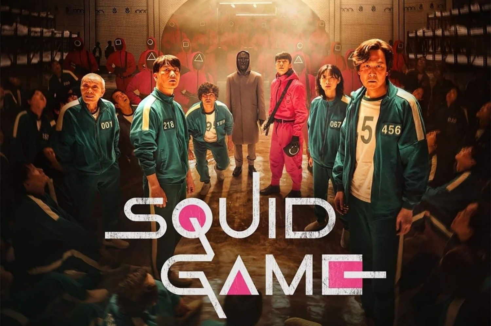

TOP 01 - Round 6

Um misterioso convite para entrar no jogo é enviado para pessoas em risco que precisam urgentemente de dinheiro. No jogo, 456 participantes de todas as esferas da vida estão trancados em um local secreto onde jogam para ganhar 45,6 bilhões de won. Cada jogo é um jogo infantil tradicional coreano, como Red Light, Green Light, mas a consequência de perder é a morte. Quem será o vencedor e qual é o propósito deste jogo?".